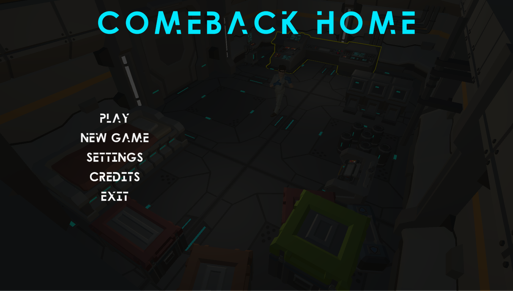
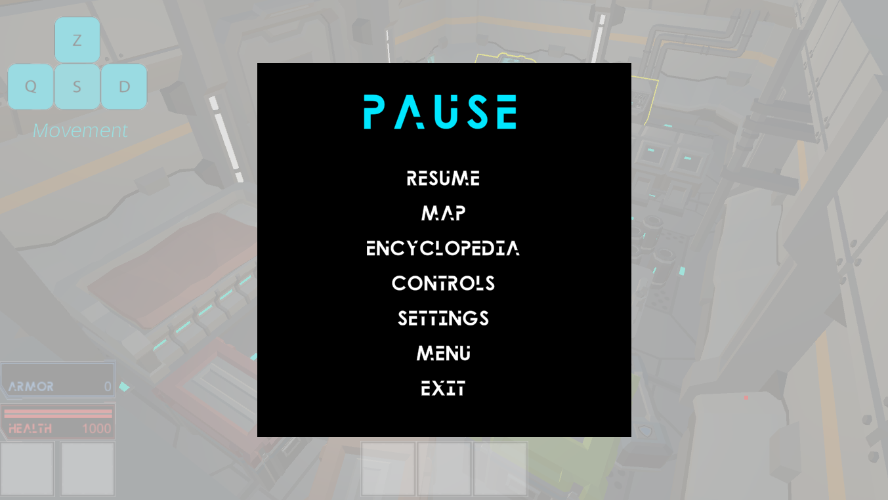
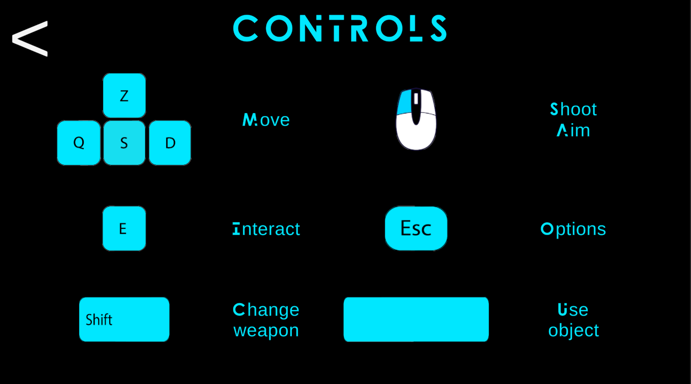
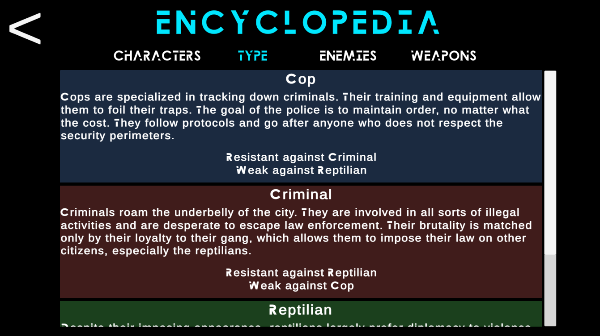
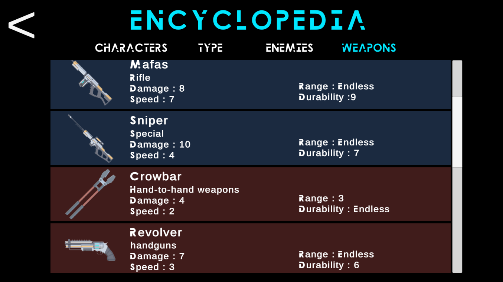
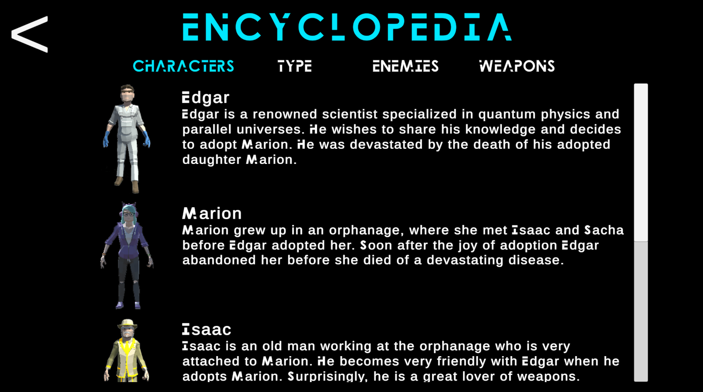

Comeback Home est un rogue like 3D sur PC. L'histoire se déroule dans un monde futuriste où la technologie est très avancée et les Hommes vivent sur la Terre en cohabitation avec des races extraterrestres de tout le système solaire.
Le joueur incarne un scientifique, Edgar dont le but est de parcourir différents mondes parallèles à la recherche de sa fille à l’aide d’une machine qu’il a créée.
Plus le joueur utilise la machine, plus les mondes qu’il traverse vont être hostiles et dangereux.
Le jeu se déroule dans une grande carte “La ville” qui est peuplée de 3 classes d'ennemis disposés différemment dans la carte à chaque nouveau monde.
Plus on avance dans le jeu, plus les ennemis sont nombreux et mieux armés.
Le joueur va devoir faire preuve d'ingéniosité pour survivre dans tous ces mondes en utilisant habilement les armes et objets qu’il pourra récupérer sur les corps de ses ennemis.
Boucle de jeu OCR
L’Objectif est de traverser la ville pour rejoindre la maison du joueur, afin de peut-être y retrouver sa fille.
Le Challenge est de traverser les zones et d’affronter tous les ennemis qui se trouvent sur la route du joueur. Ils seront de plus en plus nombreux et forts.
La Récompense dépend de si le joueur trouve la fille du personnage dans sa maison. Si la maison est vide c’est que ce n’était pas le bon endroit. La récompense est alors que le joueur augmente ses chances de trouver Marion à la prochaine boucle de jeu. S’il rentre et voit sa fille Marion, alors le jeu est terminé.
Système Pierre-Feuille-Ciseau
Le système de combats du jeu est un système Pierre-Feuille-Ciseau, nous avons 3 types d'ennemis : les policiers, les reptiliens et les criminels. Chacun ayant une faibles et une résistance envers les autres types.
Ainsi le joueur devra s'équiper d'armes puissante contre le type d'ennemis qu'il rencontre pour que son aventure se déroule au mieux.
Inventaire
Au cours de la partie, le joueur va ramasser des items qui l'aideront par la suite tel que des armes, des armures ou des bandages.
Ces items sont conservé à la fin d'un niveau pour le suivant ainsi plus le joueur avance dans l'histoire mieux il sera équipé pour vaincre les ennemis.
Cela permet aussi de rester dans le flow, le jeu ne sera jamais trop facile ou trop dur.
On retrouver sur l'HUD les couleurs des types Policiers-Reptiliens-Criminels pour chaque arme ainsi que les munitions restantes pour les armes à feux.
Ces deux informations seront à surveiller par le joueur pour réussir au mieux les niveaux.
J'ai participé au développement et à la programmation de ce prototype.
Voici les principales taches dont je me suis occupé durant le projet :
Design et implémentation des interfaces
Pour ce projet, nous étions 5 développeurs et n'avions pas d'artiste, c'est pourquoi je me suis occupé du design et plus de l'implémentation des interfaces.
Pour ce qui est de l'HUD, nous voulions avoir rapidement accès aux infos de notre personnage : sa santé, ses items (avec leur type et leur munition), une minimap.
Concernant les menus, il fallait rester dans le theme futuriste, avec la couleur cyan, la police d'écriture et avec des menus peu chargé.
-

Menu principal
-

Menu pause
-

Menu contrôle
Encyclopédie
Créer une encyclopédie nous permettait de garder une trace de l'histoire que le joueur découvre et de rappeler les informations relatives au armes et aux types.
Avec le temps imparti, l'encyclopédie est figé, une piste d'amélioration serait de faire en sorte que les informations se débloquent lorsque le joueur les rencontrent pour la première fois.
-

Encyclopédie : types
-

Encyclopédie : armes
-

Encyclopédie : armes
Tutoriel
J'ai réalisé le premier niveau, qui sert de tutoriel, le joueur découvre ainsi comment se déplacer, se battre (contre 2 ennemis assez inoffensif).
Il rencontre également les autres personnages, qui lui donnent des bandages et/ou des armures et lui apprennent à s'en servir. Cela permet également de mettre plus de contexte à l'histoire.
Inventaire
Nous avons été plusieurs à travaillé sur l'inventaire mais je me suis principalement occupé des bandages et des armures ainsi que de leurs impacts dans le jeu. J'ai aussi travaillé sur le changement d'arme.
M'occupant des interfaces, j'ai également fais toute la liaison jeu et interface au niveau de l'inventaire.
Sauvegarde
Les principales informations que nous souhaitions sauvegarder en l'état actuelle du prototype étaient les paramètres de son, l'inventaire du joueur et le niveau max qu'il a atteint.
L'implémentation de la sauvegarde s'est faite en utilisant les PlayerPrefs d'Unity.